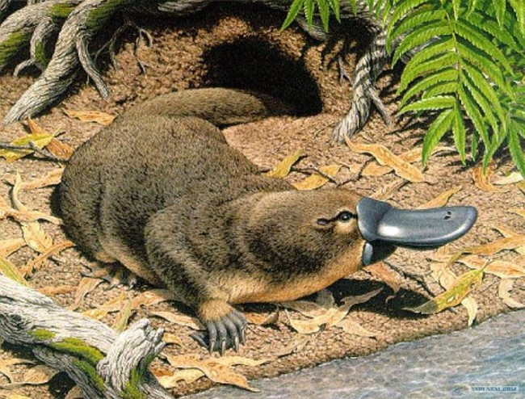

Утконос
Утконос относится к отряду млекопитающих. Близким его родственником считается ехидна, вместе с ней они представляют отряд однопроходные. Обитает утконос только на одном континенте – Австралия. Впервые об утконосах зоологический европейский мир заговорил только в 1797 году. И сразу же после открытия животного начали точиться споры, кто же это, птица, пресмыкающиеся или млекопитающее? Ответ на вопрос дал немецкий биолог Меккель, обнаружив у самки утконоса молочные железы. После такого открытия утконосов отнесли к млекопитающим.
Утконос - животное небольших размеров, в длину он достигает 30-40 сантиметров. Хвост у него плоский, похожий на хвост бобра, только покрытый шерстью, длиной 10-15 см. Голова у утконоса круглой формы, на морде размещен плоский клюв в длину до 6,5 см и ширину 5 см. В задней части хвоста откладывается жир. Строение клюва утконоса сильно отличается от строения клюва у птиц. Клюв утконоса состоит из двух длинных дугообразных косточек, обтянутых эластичной и мягкой кожей. В ротовой полости имеются защечные мешки, в которые утконос собирает добычу.
Лапы утконоса оснащены пятью пальцами, между которыми есть плавательные перепонки. Кроме того, на пальцах у животного имеются когти, предназначенные для копания земли. Перепонки на задних лапах у утконоса развиты плохо, поэтому главную роль при плаванье отыгрывают передние конечности. Когда животное передвигается по суше, его походка похожа на походку рептилии.
Клюв утконоса имеет два носовых отверстия на верхней стороне. Ушных раковин у зверька нет, а только ушные отверстия. Глаза утконоса размещены в желобках по сторонам головы. Когда утконос ныряет, он полностью закрывает уши, ноздри и глаза. Ничего не видя, ничего не слыша и не чувствуя утконос ищет свою добычу с помощью клюва, на котором размещены электрорецепторы. С помощью этих рецепторов утконос улавливает слабые электрические сигналы, издаваемые добычей. Утконос – единственное млекопитающее, которое обладает механизмом улавливания электрических сигналов.
Перед началом брачного сезона все утконосы ложатся в зимнюю спячку на 5-10 дней. Проснувшись, зверьки активно берутся за дело. До начала спаривания каждый самец ухаживает за самкой, покусывая ее за хвост. Брачный сезон длится с августа по ноябрь.
После спаривания самка начинает строить выводковую нору. От обычной она отличается длинной и в конце норы размещена гнездовая камера. Выводковую нору самка так же оборудует и внутри, нанося в гнездовую камеру разные листья и стебли. По окончанию строительных работ, самка закрывает коридоры в гнездовую камеру пробками из земли. Таким образом, самка защищает убежище от паводка или нападения хищников. Затем самка откладывает яйца. Чаще это 1 или 2 яйца, реже 3. Яйца утконоса больше похожи на яйца рептилии, нежели птицы. Они имеет округлую форму и покрытые кожистой серовато-белой скорлупой. Отложив яйца, самка практически все время находится в норе, обогревая их, пока не вылупятся малыши.
Детеныши утконоса появляются на 10-ый день после кладки. Малыши рождаются слепыми и абсолютно без шерсти в длину до 2,5 см. Чтобы появится на свет, малыши пробивают скорлупу специальным яйцевым зубом, выпадающим сразу после рождения. Только вылупившихся детенышей мать перемещает себе на живот и кормит молоком, выступающим из пор на животе. Новоиспеченная мать не покидает своих малышей на долгое время, а только на несколько часов, чтобы поохотится и высушить шерсть.
На 11-ой недели жизни малыши полностью покрываются шерстью и начинают видеть. Самостоятельно охотятся детеныши уже в 4 месяца. Полную самостоятельную жизнь без матери молодые утконосы ведут после 1-го года жизни.